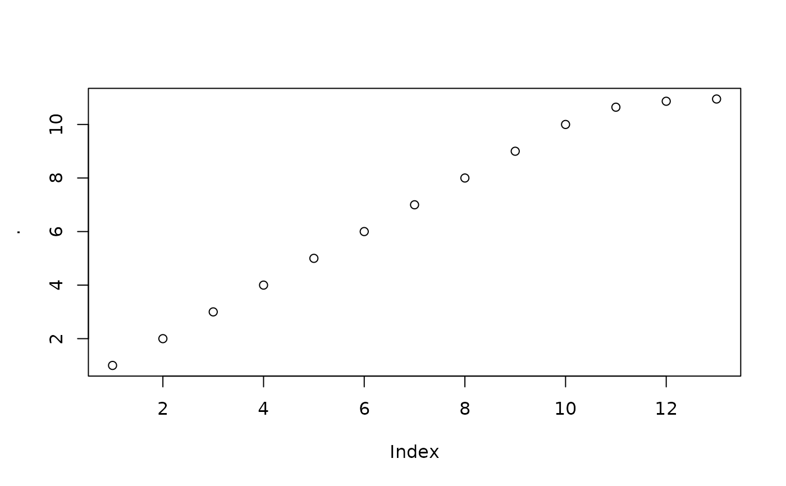

R/vec-log_interval.R
log_interval_vec.RdThe log_interval_vec() transformation constrains a forecast to an interval
specified by an upper_limit and a lower_limit. The transformation provides
similar benefits to log() transformation, while ensuring the inverted transformation
stays within an upper and lower limit.
log_interval_vec( x, limit_lower = "auto", limit_upper = "auto", offset = 0, silent = FALSE ) log_interval_inv_vec(x, limit_lower, limit_upper, offset = 0)
| x | A positive numeric vector. |
|---|---|
| limit_lower | A lower limit. Must be less than the minimum value. If set to "auto", selects zero. |
| limit_upper | An upper limit. Must be greater than the maximum value. If set to "auto", selects a value that is 10% greater than the maximum value. |
| offset | An offset to include in the log transformation. Useful when the data contains values less than or equal to zero. |
| silent | Whether or not to report the parameter selections as a message. |
Log Interval Transformation
The Log Interval Transformation constrains values to specified upper and lower limits. The transformation maps limits to a function:
log(((x + offset) - a)/(b - (x + offset)))
where a is the lower limit and b is the upper limit
Inverse Transformation
The inverse transformation:
(b-a)*(exp(x)) / (1 + exp(x)) + a - offset
Box Cox Transformation: box_cox_vec()
Lag Transformation: lag_vec()
Differencing Transformation: diff_vec()
Rolling Window Transformation: slidify_vec()
Loess Smoothing Transformation: smooth_vec()
Fourier Series: fourier_vec()
Missing Value Imputation & Anomaly Cleaning for Time Series: ts_impute_vec(), ts_clean_vec()
Other common transformations to reduce variance: log(), log1p() and sqrt()
library(dplyr) library(timetk) values_trans <- log_interval_vec(1:10, limit_lower = 0, limit_upper = 11)#> #> #> #>values_trans#> [1] -2.3025851 -1.5040774 -0.9808293 -0.5596158 -0.1823216 0.1823216 #> [7] 0.5596158 0.9808293 1.5040774 2.3025851values_trans_forecast <- c(values_trans, 3.4, 4.4, 5.4) values_trans_forecast %>% log_interval_inv_vec(limit_lower = 0, limit_upper = 11) %>% plot()